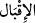

26. Evet, onlar o gün zilletle boyun eğeceklerdir.
Kişi bir şeye boyun eğip, tevazu gösterip itaat edince “
” denilir. “
” nin
asıl mânâsı, selâmet ve kurtuluş talep etmektir. Mânâ şöyledir: Acziyetleri ortaya çıktığı
ve bütün çareler tükendiği, tüm çıkış yolları kapandığı için onlar zorunlu olarak eğilir,
tevazu gösterir, zelil ve hakir olarak boyun eğerler demektir. Yahut onlar birbirlerini
yardımsız bırakıp bile bile tehlikeye atmakta, acziyetten dolayı birbirlerini zelil ve
hakir olarak terk etmektedirler. Artık onların hepsi eğilmek, tevazu göstermek ve boyun
eğmek durumundadırlar. Hiçbiri yardım göremez. Kâfirlerin bu halleri aynı gemide
yolculuk yapan dostların gemilerinin alabora olması, yolcuların denize savrulup
yolculardan her biri kendi can derdine düşerek başkası şöyle dursun canını kurtarmaktan
âciz olduğu için her birinin arkadaşını yardımsız bırakıp tehlikeye atması gibidir. Ancak
Allah için birbirlerini sevenler böyle değildirler. Hâfız der ki:
Hak erlerine dost ol, çünkü Nuh’un gemisinde
Öyle toprak vardır ki Tufan’ı bile bir damlacık su saymaz
27. (İşte bu duruma düştükleri vakit) onlardan bir kısmı, diğerlerine yönelir,
birbirlerini sorumlu tutmaya çalışırlar.
“(İşte bu duruma düştükleri vakit) onlardan bir kısmı,” yani onlara tâbi olanlar ya
da kâfirler “diğerlerine” reislerine, yakınlarına “yönelir,”
“
”, öne gelmek ve yüzü bir kimse tarafına yakın eylemek/çevirmek demektir.
Birisi birine yüzünü döndüğünde Arapça’da “
” denir. Bu kelime arkasını
dönmek anlamına gelen “
” kelimesinin zıddıdır.
“Birbirlerini sorumlu tutmaya çalışırlar.” Yani husûmetle birbirlerini suçlamaya,
yermeye başlarlar ve birbirleriyle münakaşa ederler. Sanki onlara şöyle denilir:
Birbirinizi nasıl sorguya çekiyorsunuz, sorumlu tutuyorsunuz?
28. (Uyanlar, uydukları adamlara:) Siz bize sağdan gelirdiniz (sûreti haktan
görünürdünüz) derler.